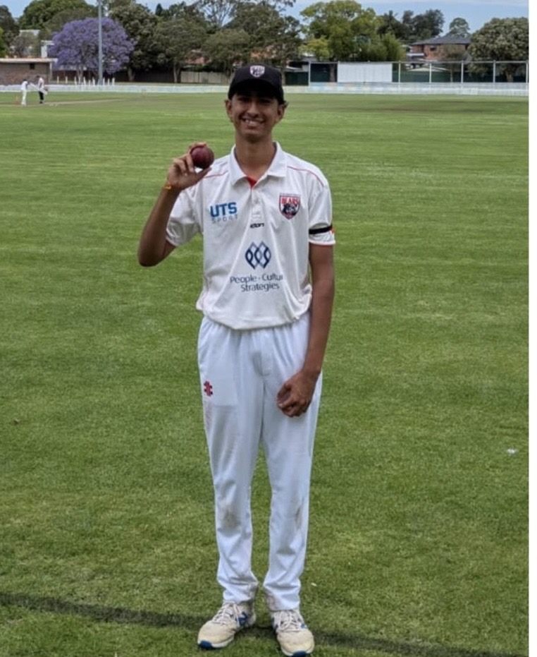

KYMECH / CODE
HEY, I’M KABIR 👋
A mechanical engineer who wants to make software move things.
UNSW student based in Sydney, combining code, CAD and hands-on problem solving to build useful systems.
HEY, I’M KABIR 👋
UNSW student based in Sydney, combining code, CAD and hands-on problem solving to build useful systems.
Résumé
Experience · Skills · EducationOPEN TO INTERNSHIPS
2026Sydney · Australian citizenBuild to understand.
Test to improve.
The next step in connecting both sides of my engineering interests.
CURRENT TOOLKIT
NO CODE SOCIETY · UNSW
Supporting workshops, sharing practical tools and developing partnerships for student events.

OFF THE SCREEN
Have a problem worth building around?
Let’s talk ↗SYDNEY, AUSTRALIA · 2026